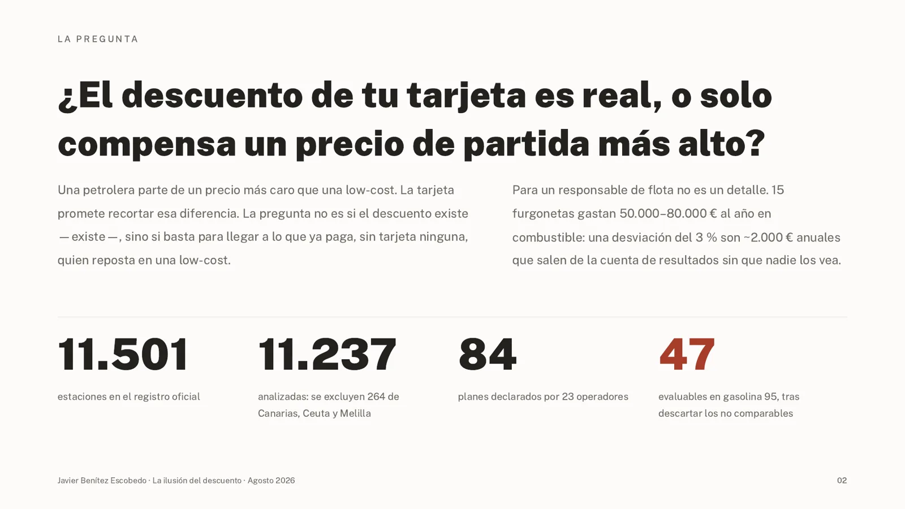
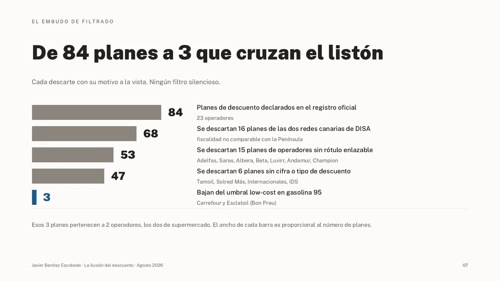
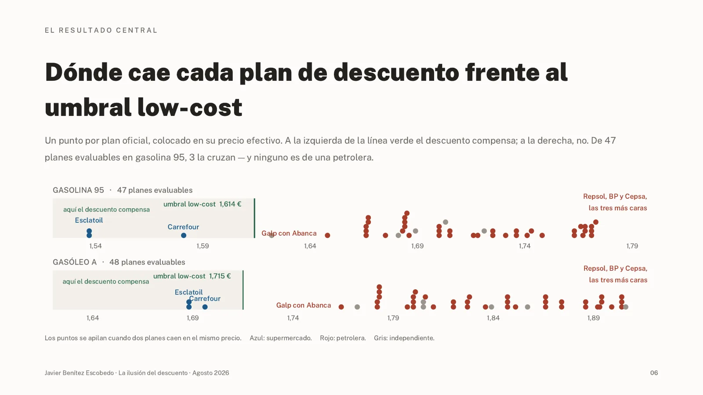
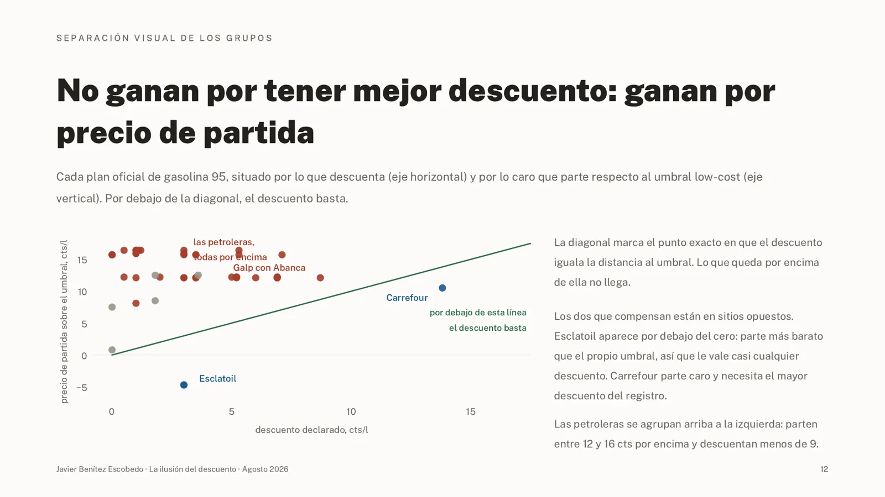
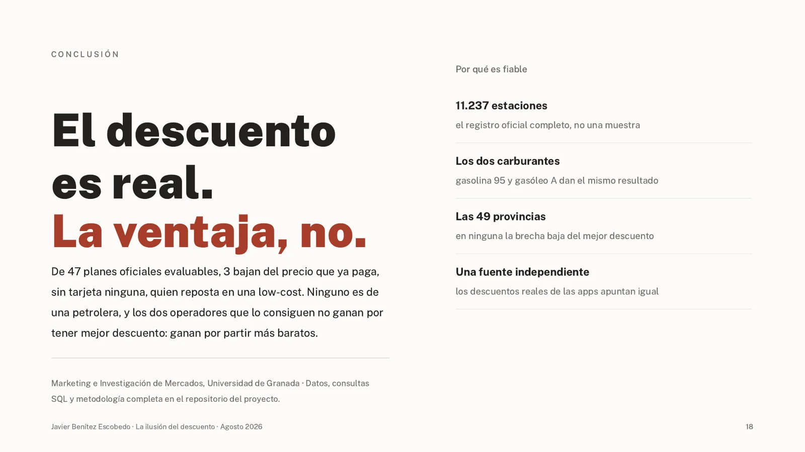

11.501
estaciones en el registro oficial
11.237
analizadas (se excluyen 264 de Canarias, Ceuta y Melilla)
84
planes declarados por 23 operadores
47
evaluables en gasolina 95 tras descartar los no comparables
La pregunta
¿El descuento de tu tarjeta es real, o solo compensa un precio de partida más alto?
La pregunta no es si el descuento existe, sino si basta para llegar a lo que ya paga, sin tarjeta, quien reposta en una low-cost.
Para quién: un responsable de flota. 15 furgonetas gastan 50.000–80.000 € al año en combustible; una desviación del 3 % son ~2.000 € anuales.


La métrica
Precio efectivo frente al umbral low-cost.
Fórmulaprecio efectivo = precio base medio del operador − descuento
compensa solo si precio efectivo < precio medio low-cost
Qué señala
Si con la tarjeta acabas pagando menos que quien reposta sin tarjeta en la low-cost.
Qué no es
No es el ahorro frente a no tener tarjeta (ese siempre es positivo, y es el que anuncian las compañías). No mide el descuento; mide si el descuento basta.
Ejemplo · Repsol, gasolina 95: base 1,771 € − 0,030 € (Repsol Más Visa) = 1,741 €, frente a un umbral low-cost de 1,614 €. Se queda a 12,7 cts (15,9 cts en gasóleo A).
El punto de partida
Antes de descuentos, las petroleras parten 15,0 cts por encima de las low-cost en gasolina 95 y 17,7 cts en gasóleo A.
| Tipo | Gasolina 95 | Estaciones | Gasóleo A |
|---|---|---|---|
| Petrolera | 1,764 € | 5.305 | 1,892 € |
| Independiente | 1,665 € | 4.514 | 1,781 € |
| Supermercado | 1,619 € | 395 | 1,749 € |
| Low-cost | 1,614 € | 1.023 | 1,715 € |
Giro 1 · desconfiar del dato llamativo
El hallazgo que resultó ser un sistema fiscal distinto.
Una filial canaria de DISA aparecía como la única petrolera cuyo descuento compensaba. La causa: Canarias aplica IGIC del 7 % frente al IVA del 21 %. La gasolina 95 está a 1,492 € de media en Canarias, 12,2 cts por debajo del umbral peninsular antes de cualquier descuento.
Decisión: se excluyen 264 estaciones y 16 planes. No era una ventaja comercial; era otra fiscalidad.
El embudo
De 84 planes a 3.
- Declarados en el registro oficial23 operadores
- Sin las redes canarias de DISA−16, fiscalidad no comparable
- Con rótulo enlazable−15 (Adelfas, Saras, Albera, Beta, Luvirr, Andamur, Champion)
- Con cifra o tipo de descuento−6 (Tamoil, Solred Más, Internacionales, IDS)
- Bajan del umbral low-cost en gasolina 95Carrefour y Esclatoil (Bon Preu)
Cada descarte con su motivo a la vista. Ningún filtro silencioso.


Hallazgos
Ninguna petrolera compensa. Los que compensan no ganan por el descuento.


A · Compensan, pero no por el descuento
Carrefour y Esclatoil bajan del umbral en los dos carburantes. Ninguno es petrolera.
- Carrefour: el mayor descuento del registro (8 %, 13,8 cts en gasolina 95). Parte de 1,719 € → 1,581 € con descuento: 3,3 cts por debajo (1,9 cts en gasóleo A). 146 estaciones en 41 provincias.
- Esclatoil: descuento de solo 3 cts, pero ya vende a 1,567 €, 4,7 cts por debajo del umbral antes de la tarjeta. Gana por precio de partida. 71 estaciones, solo en Cataluña (Barcelona 36 · Girona 18 · Tarragona 11 · Lleida 6).
B · No compensan
Los 39 planes evaluables de petrolera quedan por encima del umbral.
Techo de los programas propios: 6,0 cts (Galp Flota Business), que se queda 6,1 cts corto.
| Plan | Descuento | Precio efectivo | Le faltan |
|---|---|---|---|
| Galp con Abanca | 5 % | 1,648 € | 3,4 cts |
| Galp Flota Business | 6 cts | 1,675 € | 6,1 cts |
| Euroshell | 2 cts | 1,716 € | 10,2 cts |
| Repsol Más Visa | 3 cts | 1,741 € | 12,7 cts |
| miBP | 3 cts | 1,743 € | 12,9 cts |
| Cepsa Star | 1 cts | 1,768 € | 15,4 cts |


Giros 2 y 3 · fuera del registro y triangulación
Con los descuentos reales de las apps, la conclusión aguanta.
Waylet (Repsol) no aparece en el fichero del MITECO; Cepsa Gow declara 0,5 cts/l pero su app da 5–6 cts/l; miBP declara 3 cts/l y coincide con la app.
Con los descuentos de las apps: Waylet 1,721 €, Gow 1,723 €, miBP 1,743 €. Ninguno compensa. El techo teórico de Waylet (20 cts/l) sí cruza, pero exige contratar luz, gas, solar y seguro con Repsol.
Por provincia
Las 49 provincias de península y Baleares tienen al menos una low-cost. Brecha mínima Baleares 9,6 cts, máxima Girona 26,5 cts, media 15,4 cts. Ni en la más favorable el mejor descuento propio de petrolera cierra la distancia (faltarían 3,6 cts).
Dashboard interactivo
[PENDIENTE: enlace público de Looker Studio]
Aquí irá el cuadro de mando de Looker Studio incrustado.
Limitaciones
Lo que este análisis no resuelve.
- Es una foto fija del 13/08/2026, no una serie.
- El descuento se aplica sobre la media del operador, no estación a estación.
- No incluye acuerdos privados de flota.
- No incluye el coste del desvío ni los servicios (red en ruta, lavado, cafetería).
Cómo usarlo
El listón: 1,614 € en gasolina 95 y 1,715 € en gasóleo A.
- Flotas: pedir el descuento en céntimos por litro, no en porcentaje; usar la brecha de la propia provincia (9,6–26,5 cts); el listón a batir es 6,0 cts.
- Particulares: con Carrefour o Esclatoil cerca, la tarjeta sí compensa; con tarjeta de petrolera y sin necesidad de red, la low-cost sin tarjeta sale más barata.
Conclusión
El descuento es real. La ventaja, no.
De 47 planes oficiales evaluables, 3 bajan del precio que ya paga, sin tarjeta, quien reposta en una low-cost. Ninguno es de una petrolera, y los dos operadores que lo consiguen no ganan por tener mejor descuento: ganan por partir más baratos.
Por qué es fiable: 11.237 estaciones (el registro completo, no una muestra) · dos carburantes con el mismo resultado · las 49 provincias · una fuente independiente (las apps) apunta igual.

